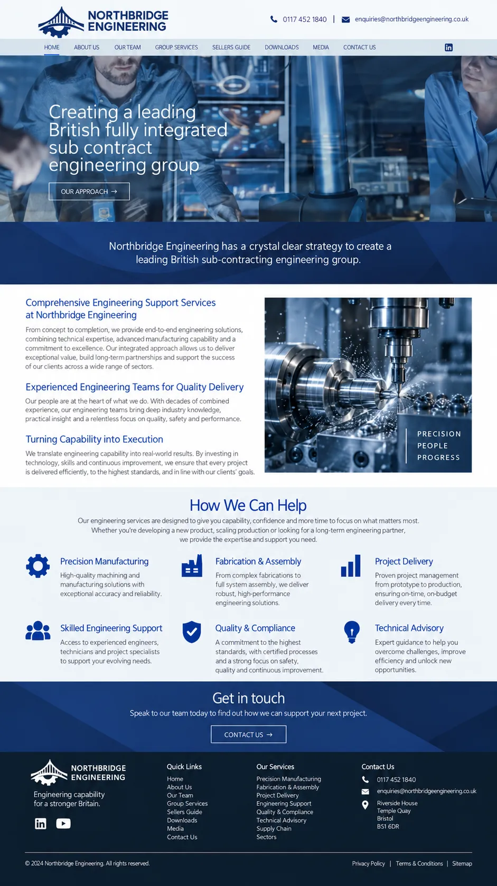

A website redesign for an established engineering business
How I helped:
Project overview
- Starting point
- Existing website with a dated structure
- Main objective
- Make technical capabilities easier to understand
- Primary users
- Prospective clients, procurement teams and project partners
- Content priority
- Capabilities, sectors, accreditations and previous work
- Delivery
- Full redesign and migration
A clearer way to present specialist engineering capabilities
The business had grown considerably since its website was first built. New capabilities, sectors and accreditations had been added over time, but the website structure had not kept pace. Visitors were faced with long technical pages and no obvious route to the information most relevant to their project.
The redesign needed to present the company as an established engineering partner while making its technical expertise easier to understand, compare and navigate.
The brief
Rebuild the website around the company’s current capabilities and sectors, make technical information easier to scan and give prospective clients a clearer route from researching the business to starting a project conversation.
Scope
Turning technical information into a clearer customer journey
The existing site contained useful technical information, but much of it had been added over time without a consistent structure. The first step was to separate the company’s capabilities, sectors and supporting information so visitors could reach the right content without working through unrelated pages.
I introduced a capability-led navigation structure and gave each core service a consistent page format. Technical copy was broken into shorter sections, supporting specifications were kept where they were useful, and accreditations and previous project experience were made easier to find.
The redesign also gave the company more space to show the scale and quality of its work through imagery and project examples. Once the new structure was complete, the site was moved to the new hosting setup and tested across desktop, tablet and mobile.
Key improvements

Start a similar project
If your website has grown without a clear structure, I can help reorganise the content and rebuild it around the services and expertise your customers need to find.
Tell me about your project